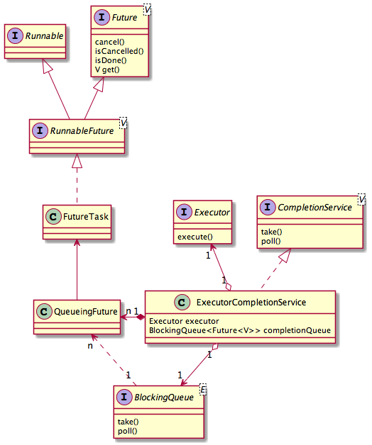

个人理解
想想一个需求，现在有N多个任务需要执行，在这些任务执行每个完成时需要立即对其结果进行进一步处理，这个时候应该怎么做？仔细想想除非显示的去修改任务的代码，否则没有好的办法可以完成。这时CompetionService可以登场了！
CompletionService接口定义了一组带相同返回值的任务的管理接口,可以最快的获取这些批量任务的执行结果，ExecutorService.invokeAny就使用了这个技术！
源码如下：
public interface CompletionService<V> {
//提交任务
Future<V> submit(Callable<V> task);
//提交任务
Future<V> submit(Runnable task, V result);
//获取一个执行结果（并移除） 阻塞
Future<V> take() throws InterruptedException;
//获取一个执行结果（并移除） 不阻塞
Future<V> poll();
//获取一个执行结果（并移除） 带超时
Future<V> poll(long timeout, TimeUnit unit) throws InterruptedException;
}
ExecutorCompletionService类是CompletionService接口的实现
ExecutorCompletionService内部管理者一个已完成任务的阻塞队列，其引用了一个Executor用来执行任务，submit()方法最终会委托给内部的executor去执行任务，take/poll方法的工作都委托给内部的已完成任务阻塞队列
如果阻塞队列中有已完成的任务, take方法就返回任务的结果, 否则阻塞等待任务完成
源码如下：
public class ExecutorCompletionService<V> implements CompletionService<V> {
//被包装Executor
private final Executor executor;
//如果executor是AbstractExecutorService就为它
private final AbstractExecutorService aes;
//完成任务的阻塞队列
private final BlockingQueue<Future<V>> completionQueue;
/**
* 扩展FutureTask，重写了其done方法用于将完成任务放置在阻塞队列！！！
*/
private class QueueingFuture extends FutureTask<Void> {
QueueingFuture(RunnableFuture<V> task) {
super(task, null);
this.task = task;
}
protected void done() { completionQueue.add(task); }
private final Future<V> task;
}
private RunnableFuture<V> newTaskFor(Callable<V> task) {
if (aes == null)
return new FutureTask<V>(task);
else
return aes.newTaskFor(task);
}
private RunnableFuture<V> newTaskFor(Runnable task, V result) {
if (aes == null)
return new FutureTask<V>(task, result);
else
return aes.newTaskFor(task, result);
}
public ExecutorCompletionService(Executor executor) {
if (executor == null)
throw new NullPointerException();
this.executor = executor;
this.aes = (executor instanceof AbstractExecutorService) ?
(AbstractExecutorService) executor : null;
this.completionQueue = new LinkedBlockingQueue<Future<V>>();
}
public ExecutorCompletionService(Executor executor,
BlockingQueue<Future<V>> completionQueue) {
if (executor == null || completionQueue == null)
throw new NullPointerException();
this.executor = executor;
this.aes = (executor instanceof AbstractExecutorService) ?
(AbstractExecutorService) executor : null;
this.completionQueue = completionQueue;
}
//提交任务
public Future<V> submit(Callable<V> task) {
if (task == null) throw new NullPointerException();
RunnableFuture<V> f = newTaskFor(task);
executor.execute(new QueueingFuture(f));
return f;
}
//提交任务
public Future<V> submit(Runnable task, V result) {
if (task == null) throw new NullPointerException();
RunnableFuture<V> f = newTaskFor(task, result);
executor.execute(new QueueingFuture(f));
return f;
}
//获取结果带阻塞
public Future<V> take() throws InterruptedException {
return completionQueue.take();
}
//获取结果
public Future<V> poll() {
return completionQueue.poll();
}
//获取结果 带超时
public Future<V> poll(long timeout, TimeUnit unit)
throws InterruptedException {
return completionQueue.poll(timeout, unit);
}
}
ExecutorCompletionService主要用与管理一组带相同返回结果类型的异步任务 (有结果的任务, 任务完成后要处理结果)
原文
地址：
- CompletionService接口定义了一组任务管理接口:
- submit() - 提交任务
- take() - 获取任务结果
- poll() - 获取任务结果
- ExecutorCompletionService类是CompletionService接口的实现
- ExecutorCompletionService内部管理者一个已完成任务的阻塞队列
- ExecutorCompletionService引用了一个Executor, 用来执行任务
- submit()方法最终会委托给内部的executor去执行任务
- take/poll方法的工作都委托给内部的已完成任务阻塞队列
- 如果阻塞队列中有已完成的任务, take方法就返回任务的结果, 否则阻塞等待任务完成
- poll与take方法不同, poll有两个版本:
- 无参的poll方法 --- 如果完成队列中有数据就返回, 否则返回null
- 有参数的poll方法 --- 如果完成队列中有数据就直接返回, 否则等待指定的时间, 到时间后如果还是没有数据就返回null
- ExecutorCompletionService主要用与管理异步任务 (有结果的任务, 任务完成后要处理结果)
- 关于CompletionService和ExecutorCompletionService的类图如下:

CompletionService.png
下面是简单的用法:
package com.example.concurrent;
import java.util.ArrayList;
import java.util.List;
import java.util.Random;
import java.util.concurrent.Callable;
import java.util.concurrent.ExecutionException;
import java.util.concurrent.ExecutorCompletionService;
import java.util.concurrent.ExecutorService;
import java.util.concurrent.Executors;
import java.util.concurrent.Future;
public class Main {
public static void main(String[] args) throws ExecutionException, InterruptedException {
// case1();// case2();
case3();
}
/**
* <一>
* 1. 用List收集任务结果 (List记录每个submit返回的Future)
* 2. 循环查看结果, Future不一定完成, 如果没有完成, 那么调用get会租塞
* 3. 如果排在前面的任务没有完成, 那么就会阻塞, 这样后面已经完成的任务就没法获得结果了, 导致了不必要的等待时间.
* 更为严重的是: 第一个任务如果几个小时或永远完成不了, 而后面的任务几秒钟就完成了, 那么后面的任务的结果都将得不到处理
*
* 导致: 已完成的任务可能得不到及时处理
*/
private static void case1() throws ExecutionException, InterruptedException {
final Random random = new Random();
ExecutorService service = Executors.newFixedThreadPool(10);
List<Future<String>> taskResultHolder = new ArrayList<>();
for(int i=0; i<50; i++) {
//搜集任务结果
taskResultHolder.add(service.submit(new Callable<String>() {
public String call() throws Exception {
Thread.sleep(random.nextInt(5000));
return Thread.currentThread().getName();
}
}));
}
// 处理任务结果
int count = 0;
System.out.println("handle result begin");
for(Future<String> future : taskResultHolder) {
System.out.println(future.get());
count++;
}
System.out.println("handle result end");
System.out.println(count + " task done !");
//关闭线程池
service.shutdown();
}
/**
* <二> 只对第一种情况进行的改进
* 1. 查看任务是否完成, 如果完成, 就获取任务的结果, 让后重任务列表中删除任务.
* 2. 如果任务未完成, 就跳过此任务, 继续查看下一个任务结果.
* 3. 如果到了任务列表末端, 那么就从新回到任务列表开始, 然后继续从第一步开始执行
*
* 这样就可以及时处理已完成任务的结果了
*/
private static void case2() throws ExecutionException, InterruptedException {
final Random random = new Random();
ExecutorService service = Executors.newFixedThreadPool(10);
List<Future<String>> results = new ArrayList<>();
for(int i=0; i<50; i++) {
Callable<String> task = new Callable<String>() {
public String call() throws Exception {
Thread.sleep(random.nextInt(5000)); //模拟耗时操作
return Thread.currentThread().getName();
}
};
Future<String> future = service.submit(task);
results.add(future); // 搜集任务结果
}
int count = 0;
//自旋, 获取结果
System.out.println("handle result begin");
for(int i=0; i<results.size(); i++) {
Future<String> taskHolder = results.get(i);
if(taskHolder.isDone()) { //任务完成
String result = taskHolder.get(); //获取结果, 进行某些操作
System.out.println("result: " + result);
results.remove(taskHolder);
i--;
count++; //完成的任务的计数器
}
//回到列表开头, 从新获取结果
if(i == results.size() - 1) i = -1;
}
System.out.println("handle result end");
System.out.println(count + " task done !");
//线程池使用完必须关闭
service.shutdown();
}
/**
* <三> 使用ExecutorCompletionService管理异步任务
* 1. Java中的ExecutorCompletionService<V>本身有管理任务队列的功能
* i. ExecutorCompletionService内部维护列一个队列, 用于管理已完成的任务
* ii. 内部还维护列一个Executor, 可以执行任务
*
* 2. ExecutorCompletionService内部维护了一个BlockingQueue, 只有完成的任务才被加入到队列中
*
* 3. 任务一完成就加入到内置管理队列中, 如果队列中的数据为空时, 调用take()就会阻塞 (等待任务完成)
* i. 关于完成任务是如何加入到完成队列中的, 请参考ExecutorCompletionService的内部类QueueingFuture的done()方法
*
* 4. ExecutorCompletionService的take/poll方法是对BlockingQueue对应的方法的封装, 关于BlockingQueue的take/poll方法:
* i. take()方法, 如果队列中有数据, 就返回数据, 否则就一直阻塞;
* ii. poll()方法: 如果有值就返回, 否则返回null
* iii. poll(long timeout, TimeUnit unit)方法: 如果有值就返回, 否则等待指定的时间; 如果时间到了如果有值, 就返回值, 否则返回null
*
* 解决了已完成任务得不到及时处理的问题
*/
static void case3() throws InterruptedException, ExecutionException {
Random random = new Random();
ExecutorService service = Executors.newFixedThreadPool(10);
ExecutorCompletionService<String> completionService = new ExecutorCompletionService<String>(service);
for(int i=0; i<50; i++) {
completionService.submit(new Callable<String>() {
@Override
public String call() throws Exception {
Thread.sleep(random.nextInt(5000));
return Thread.currentThread().getName();
}
});
}
int completionTask = 0;
while(completionTask < 50) {
//如果完成队列中没有数据, 则阻塞; 否则返回队列中的数据
Future<String> resultHolder = completionService.take();
System.out.println("result: " + resultHolder.get());
completionTask++;
}
System.out.println(completionTask + " task done !");
//ExecutorService使用完一定要关闭 (回收资源, 否则系统资源耗尽! .... 呵呵...)
service.shutdown();
}
}
那咩, ExecutorCompletionService是如何执行任务, 又是如何将任务的结果存储到完成队列中的呢?
- ExecutorCompletionService在submit任务时, 会创建一个QueueingFuture, 然后将创建的QueueingFuture丢给executor, 让executor完成任务的执行工作
- QueueingFuture继承与FutureTask类, 而FutureTask实现了两个接口Runnable和Future.
- Runnable一般表示要执行的任务的过程, 而Future则表述执行任务的 结果 (或者说是任务的一个句柄, 可获取结果, 取消任务等).
- 因此FutureTask就是一个有结果可期待的任务. FutureTask实现了run方法, 我们指定此方法一般是在在工作线程(不是submit线程) 执行的, 可以看看源码:
public void run() {
if (state != NEW ||
null, Thread.currentThread()))
return;
try {
Callable<V> c = callable;
if (c != null && state == NEW) {
V result;
boolean ran;
try {
result = c.call();
ran = true;
} catch (Throwable ex) {
result = null;
ran = false;
setException(ex);
}
if (ran)
set(result);
}
} finally {
// runner must be non-null until state is settled to
// prevent concurrent calls to run()
runner = null;
// state must be re-read after nulling runner to prevent
// leaked interrupts
int s = state;
if (s >= INTERRUPTING)
handlePossibleCancellationInterrupt(s);
}
}
- FutureTask构造的时候需要一个Callable<V>参数, Callable表示一个任务的执行过程, 在run方法中恰好调用了Callable.call(), 也就是任务工作在工作线程中执行.
- 那么任务执行完了会返回结果, 这个结果是要在submit线程(就是提交任务的线程)中使用的, 那么如何让submit线程可以反问到呢? 答案也是在FutureTask类中, 我们可以看到run方法中执行任务(Callable.call())获取结果后, 会掉用一个set()方法, set方法源码如下:
protected void set(V v) {
outcome = v;
UNSAFE.putOrderedInt(this, stateOffset, NORMAL); // final state
finishCompletion();
}
}
- set() 将获取的结果存储到FuturnTask的一个outcome字段中, 这个过程是同步的, 所以其他线程稍后访问是可以读取到值的
- ExecutorCompletionService中的完成队列中正好存储的是FuturnTask的子类, 当然可以调用FutureTask的get方法, FutureTask的get方法就是获取outcome值 (get()方法中调用了report()方法, report中返回了outcome字段).
- FuturnTask中委托的任务执行完成后, 会掉一个done()方法, 这个方法是个空方法, 而其子类QueueingFuture重写了此方法, 如下:
protected void done() {
completionQueue.add(task);
}
正式在此方法中把执行完的任务放置到完成队列中的!!
然后我们就可以在submit线程中从完成队列中取出任务句柄, 获取任务结果了!!!
至此, ExecutorCompletionService原理已经解析完毕 !!
欲知后事如何, 切听下回分解 !!
作者：元亨利贞o
來源：简书
著作权归作者所有。商业转载请联系作者获得授权，非商业转载请注明出处。